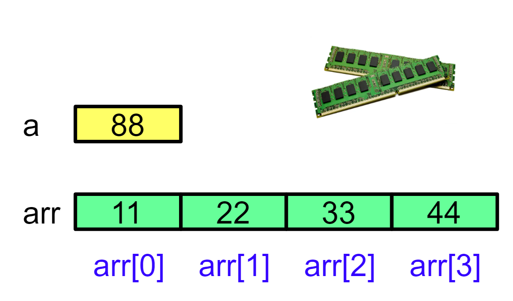
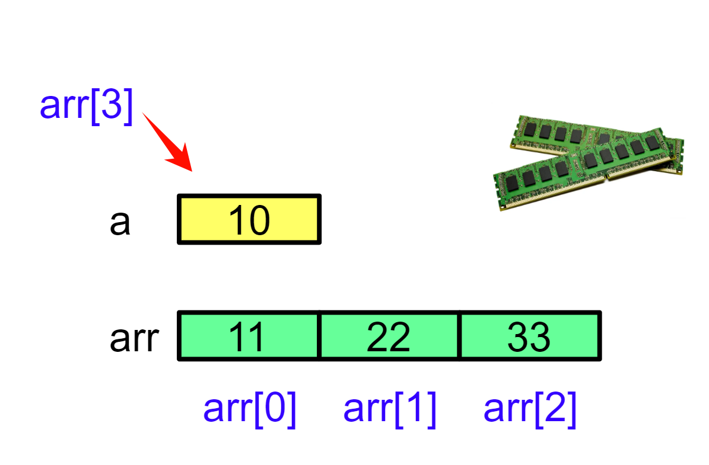
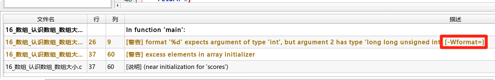
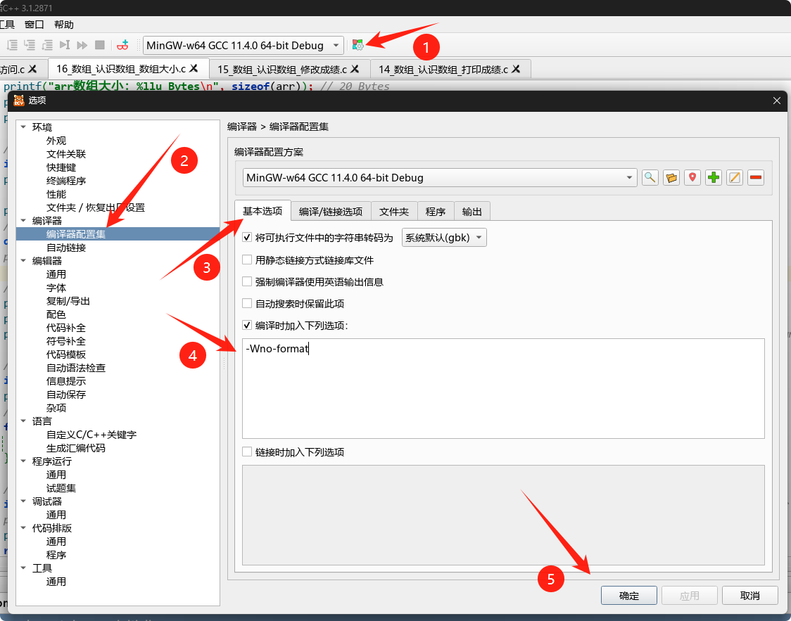
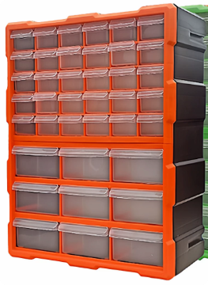

<!DOCTYPE lake>
<h1 data-lake-id="C2VTQ" id="C2VTQ"><span data-lake-id="u107b5078" id="u107b5078">1&gt; 求数组大小</span></h1><span class="yuque-card-unsupported">[codeblock]</span><p data-lake-id="ub6a4245b" id="ub6a4245b"></p><span class="yuque-card-unsupported">[codeblock]</span><hr/><h1 data-lake-id="pOpWP" id="pOpWP"><span data-lake-id="u3d12d6eb" id="u3d12d6eb">2&gt; 自动分配数组大小</span></h1><p data-lake-id="u8d73ae34" id="u8d73ae34"><span data-lake-id="udab3f203" id="udab3f203">假设你正在开发一个学生成绩管理系统。最初只需要处理5个学生的成绩：</span></p><span class="yuque-card-unsupported">[codeblock]</span><p data-lake-id="u13ea9300" id="u13ea9300"><span data-lake-id="u6c3b631f" id="u6c3b631f">后来需求变更，需要记录10个学生的成绩。你可能会这样修改：</span></p><span class="yuque-card-unsupported">[codeblock]</span><p data-lake-id="uc67892b7" id="uc67892b7"><span data-lake-id="u84a901de" id="u84a901de">突然，老师又增加了一个转校生的成绩。你匆忙中忘记修改数组大小：</span></p><span class="yuque-card-unsupported">[codeblock]</span><p data-lake-id="u7118910b" id="u7118910b"><span data-lake-id="u7b3bce0b" id="u7b3bce0b">⚠️</span><span data-lake-id="uc6b37ea1" id="uc6b37ea1"> 编译器报错：excess elements in array initializer</span></p><p data-lake-id="u66980224" id="u66980224"><span data-lake-id="u274dd766" id="u274dd766">"问题出在哪里？—— 数组大小声明和实际数据不同步！"</span></p><hr/><p data-lake-id="u868e8fe3" id="u868e8fe3"><span data-lake-id="ua0a97b1f" id="ua0a97b1f">❌</span><span data-lake-id="u196505d0" id="u196505d0"> 手动指定大小的缺点：</span></p><p data-lake-id="u2042f558" id="u2042f558"><span data-lake-id="u68d3e941" id="u68d3e941">维护麻烦：每次增删数据都要手动调整大小</span></p><p data-lake-id="u1c8c6796" id="u1c8c6796"><span data-lake-id="uf79bb9f2" id="uf79bb9f2">容易出错：忘记修改大小会导致编译错误或隐藏的越界问题</span></p><p data-lake-id="u9f5ab2ff" id="u9f5ab2ff"><span data-lake-id="u9fa16239" id="u9fa16239">代码僵化：无法灵活适应动态变化的需求</span></p><p data-lake-id="uc0639a4a" id="uc0639a4a"><br/></p><p data-lake-id="u6cd9f1b9" id="u6cd9f1b9"><span data-lake-id="u6b94bd6e" id="u6b94bd6e">"有没有一种方法，能让编译器自动分配数组大小？避免手动维护的麻烦？"</span></p><p data-lake-id="u7f4ba518" id="u7f4ba518"><span data-lake-id="uccfa5cc2" id="uccfa5cc2">👉</span><span data-lake-id="u7570138a" id="u7570138a"> 「隐式指定大小」的语法：</span></p><span class="yuque-card-unsupported">[codeblock]</span><hr/><h1 data-lake-id="lDYRJ" id="lDYRJ"><span data-lake-id="ub75ebb5d" id="ub75ebb5d">3&gt; 数组越界访问</span></h1><span class="yuque-card-unsupported">[codeblock]</span><p data-lake-id="ue0933f6a" id="ue0933f6a"><span data-lake-id="u184812b5" id="u184812b5">⚠️</span><span class="lake-fontsize-12" data-lake-id="ue1f00048" id="ue1f00048">注意使用小熊猫【Debug】版验证：</span><span class="lake-fontsize-14" data-lake-id="u44693f80" id="u44693f80"> </span></p><hr/><p data-lake-id="u38d3e23b" id="u38d3e23b"></p><p data-lake-id="u74562ff1" id="u74562ff1"><span data-lake-id="ud24bf781" id="ud24bf781">好家伙！arr[3] 修改的是a的值，arr[4]呢？</span></p><p data-lake-id="u110cf4fd" id="u110cf4fd"><span data-lake-id="u505951f6" id="u505951f6">arr[300]呢？直接"死机"！</span></p><p data-lake-id="u9d3860a2" id="u9d3860a2"><span data-lake-id="ubb2f1584" id="ubb2f1584">​</span><br/></p><p data-lake-id="u7b1c3896" id="u7b1c3896"><span data-lake-id="u65143121" id="u65143121">数组越界就是访问了超出数组申请范围的内存地址，导致数据篡改或程序崩溃。</span></p><span class="yuque-card-unsupported">[codeblock]</span><p data-lake-id="u84c758d1" id="u84c758d1"><br/></p><h1 data-lake-id="sPnSw" id="sPnSw"><span data-lake-id="u8db01629" id="u8db01629">4&gt; 忽略指定警告</span></h1><p data-lake-id="u11708fcc" id="u11708fcc"><span data-lake-id="ufadc33b8" id="ufadc33b8">如果使用sizeof出现如下警告:</span></p><p data-lake-id="u5d628c3a" id="u5d628c3a"></p><p data-lake-id="u541a2a1d" id="u541a2a1d"><span data-lake-id="u813c98bc" id="u813c98bc">说明打印格式类型和实际不匹配，可以配置编译器警告忽略选项</span></p><span class="yuque-card-unsupported">[codeblock]</span><p data-lake-id="u1bfde823" id="u1bfde823"></p><p data-lake-id="ue518db61" id="ue518db61"></p><hr/><h1 data-lake-id="YTf1z" id="YTf1z"><span data-lake-id="ub80a79e6" id="ub80a79e6">🐻</span><span data-lake-id="u2c351b22" id="u2c351b22">实践练习：</span></h1><p data-lake-id="u2d56fae8" id="u2d56fae8"><span data-lake-id="u121007ab" id="u121007ab"> 1&gt; 将数组元素，从后向前，倒着打印</span></p><span class="yuque-card-unsupported">[codeblock]</span><p data-lake-id="u12943164" id="u12943164"><span data-lake-id="u4fe8290c" id="u4fe8290c">2&gt; 程序验证下面数组的大小</span></p><span class="yuque-card-unsupported">[codeblock]</span><p data-lake-id="u4587101d" id="u4587101d"><br/></p>